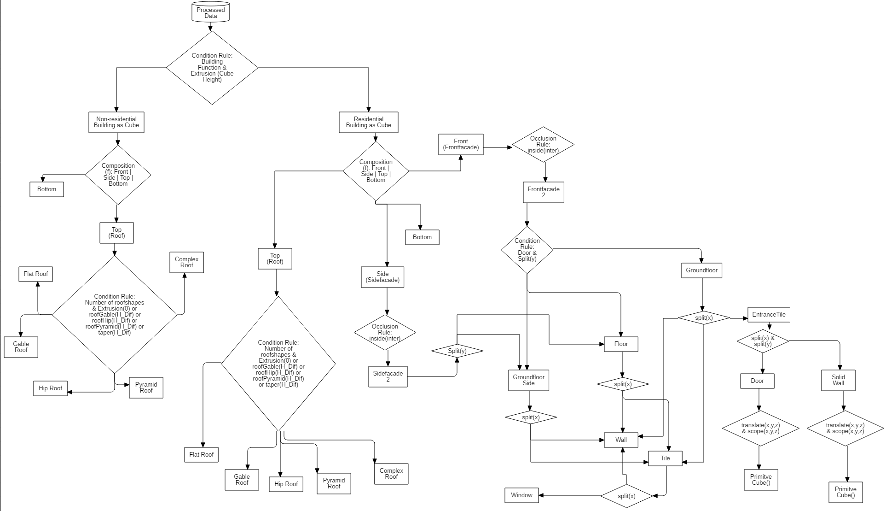

Analysis and Modeling:
Heat Energy Consumption (Net Energy) of Residential Buildings based on the ‘Procedural Building Modeling’ Approach
Summary
This project explored the methodological feasibility of estimating net heat energy consumption for residential buildings using a procedurally generated 3D semantic building model. Using the Weststadt district of Bonn as a case study, the aim was not to create a perfect replica of the built environment, but to develop a rule-based approximation that closely reflects the real-world urban fabric and serves as a foundation for energy analysis.
Using ESRI CityEngine, procedural rules (CGA) were developed to simulate building typologies by integrating attributes such as footprint, height, roof form, number of floors, and functional classification (e.g., single- vs. multi-family housing). The modeling relied on ALKIS cadastral data, land use plans, and zoning regulations, processed and harmonized in QGIS and ArcGIS Pro.

A key component of the project was the calculation of each building’s net heat energy demand, based on its geometry and semantic attributes. The estimation methodology followed the established standards EN ISO 13790 and EN 15316, which provide a framework for space heating energy calculation under steady-state conditions. Parameters such as building volume, external envelope area, usage type, and construction year were used to derive heat demand values, supported by standardized U-values and building archetype assumptions linked to thermal regulations over time.
Although certain data gaps (e.g., exact construction materials) necessitated generalizations, the approach demonstrated that even with approximate 3D models, meaningful spatial energy assessments can be carried out. The final results were visualized in an interactive 3D WebScene, showcasing both the procedural building structures and their respective energy demand values.
Overall, this project illustrated how procedural modeling can serve not only for urban visualization but also for spatially explicit energy demand simulations, providing urban planners and sustainability analysts with a scalable, reproducible method for early-stage assessments—even in data-constrained environments.